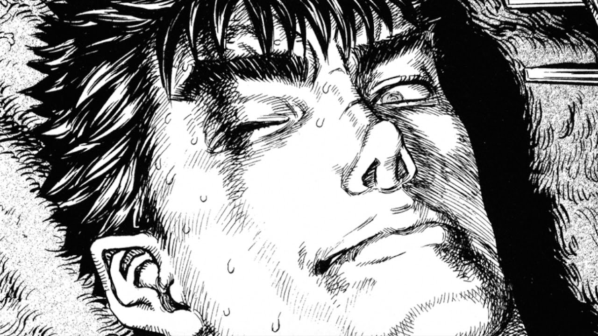
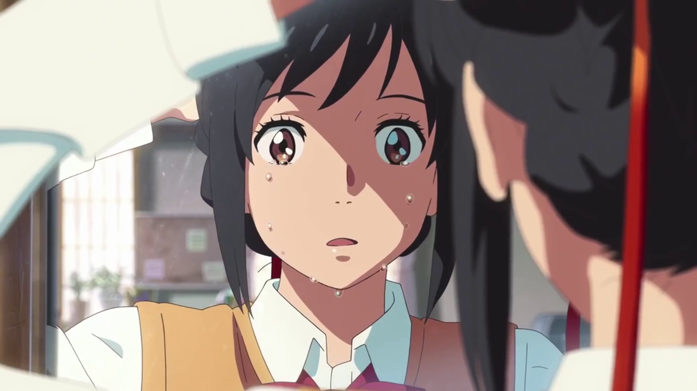
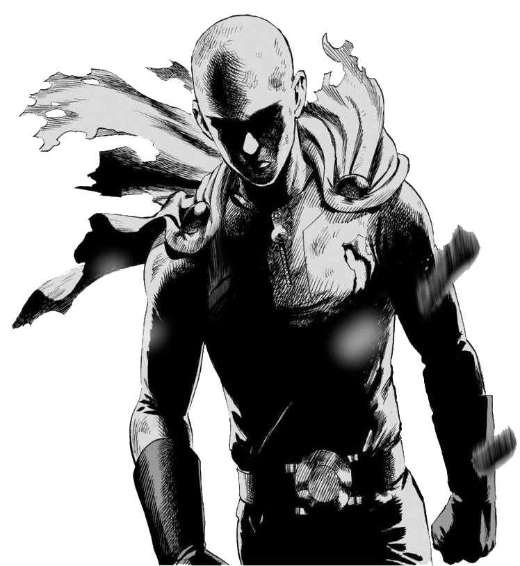

ANIME
Adicione todos os animes que você já assistiu para sua lista e tenha tudo registrado em sua conta.

MANGA
Adicione mangas em uma lista separada e acompanhe o crescimento de sua lista.

AVALIE
Dê notas a todos os animes que você já assistiu e mangas que você já leu.

No Anim8tion Zone você tem acesso a uma grande base de dados de animes e mangas.
Aqui você consegue manter controle de todos os animes e mangas que você já assistiu e leu, pode dar nota a eles e ver a nota geral de todos os usuários.
Com a base de dados de animes e mangas, você também consegue facilmente descobrir novos animes e mangas para assistir ou ler!